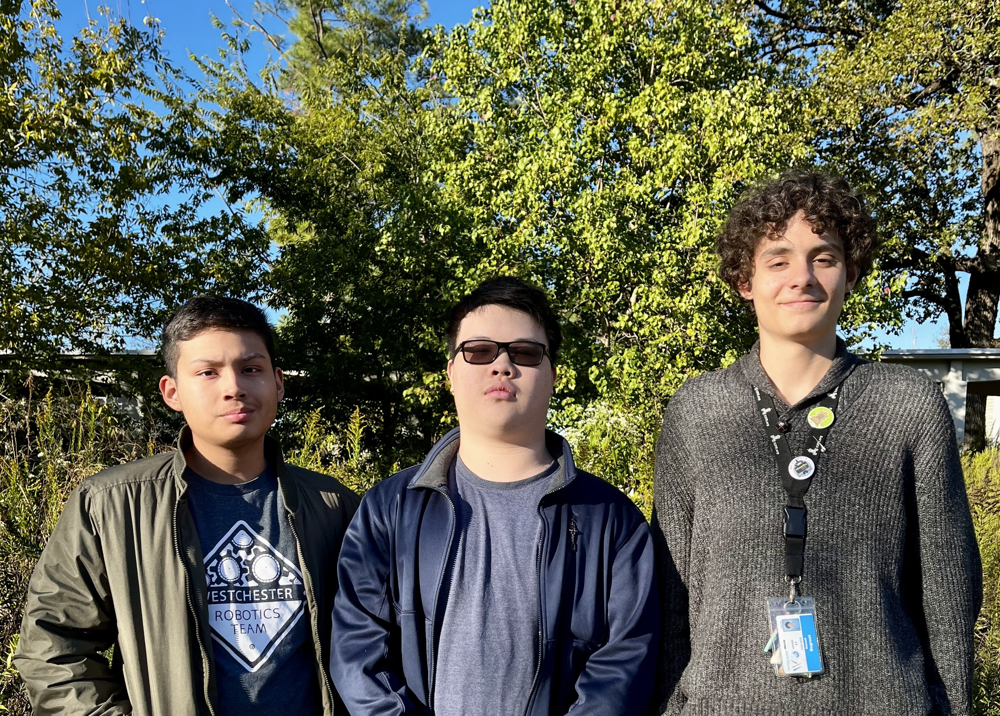

The CS workshop is an interactive oppurtunity setup by the computer science honors society to aid in the learning of programming for all WAIS students
Meetings will be hosted twice a month on mondays directly after school from 3:30 - 4:30 (you can stay as long as needed) in Mr. Wegscheids's room
The next meeting will be some point in time